Last updated: 2023-06-20
Checks: 7 0
Knit directory: RNAseq_Workshop/
This reproducible R Markdown analysis was created with workflowr (version 1.7.0). The Checks tab describes the reproducibility checks that were applied when the results were created. The Past versions tab lists the development history.
Great! Since the R Markdown file has been committed to the Git repository, you know the exact version of the code that produced these results.
Great job! The global environment was empty. Objects defined in the global environment can affect the analysis in your R Markdown file in unknown ways. For reproduciblity it’s best to always run the code in an empty environment.
The command set.seed(20230619) was run prior to running
the code in the R Markdown file. Setting a seed ensures that any results
that rely on randomness, e.g. subsampling or permutations, are
reproducible.
Great job! Recording the operating system, R version, and package versions is critical for reproducibility.
Nice! There were no cached chunks for this analysis, so you can be confident that you successfully produced the results during this run.
Great job! Using relative paths to the files within your workflowr project makes it easier to run your code on other machines.
Great! You are using Git for version control. Tracking code development and connecting the code version to the results is critical for reproducibility.
The results in this page were generated with repository version 5005aa5. See the Past versions tab to see a history of the changes made to the R Markdown and HTML files.
Note that you need to be careful to ensure that all relevant files for
the analysis have been committed to Git prior to generating the results
(you can use wflow_publish or
wflow_git_commit). workflowr only checks the R Markdown
file, but you know if there are other scripts or data files that it
depends on. Below is the status of the Git repository when the results
were generated:
Ignored files:
Ignored: .Rproj.user/
Untracked files:
Untracked: .Rprofile
Untracked: .gitattributes
Untracked: .gitignore
Untracked: RNAseq_Workshop.Rproj
Untracked: _workflowr.yml
Untracked: analysis/
Untracked: code/
Untracked: data/
Untracked: mds/
Untracked: output/
Untracked: volcano/
Note that any generated files, e.g. HTML, png, CSS, etc., are not included in this status report because it is ok for generated content to have uncommitted changes.
There are no past versions. Publish this analysis with
wflow_publish() to start tracking its development.
This is following a workshop presented here: Differential expression analysis 30 November 2020 Authors: Belinda Phipson, Anna Trigos, Matt Ritchie, Shian Su, Maria Doyle, Harriet Dashnow, Charity Law
https://combine-australia.github.io/RNAseq-R/06-rnaseq-day1.html
Packages used:
To install the packages you can:
Measuring gene expression on a genome-wide scale has become common practice over the last two decades or so, with microarrays predominantly used pre-2008. With the advent of next generation sequencing technology in 2008, an increasing number of scientists use this technology to measure and understand changes in gene expression in often complex systems. As sequencing costs have decreased, using RNA-Seq to simultaneously measure the expression of tens of thousands of genes for multiple samples has never been easier. The cost of these experiments has now moved from generating the data to storing and analysing it.
There are many steps involved in analysing an RNA-Seq experiment. Analysing an RNAseq experiment begins with sequencing reads. These are aligned to a reference genome, then the number of reads mapped to each gene can be counted. This results in a table of counts, which is what we perform statistical analyses on in R. While mapping and counting are important and necessary tasks, today we will be starting from the count data and getting stuck into analysis.
First, let’s load all the packages we will need to analyse the data.
library(edgeR)
library(limma)
library(Glimma)
library(org.Mm.eg.db)
library(gplots)
library(RColorBrewer)
library(NMF)The data for this tutorial comes from a Nature Cell Biology paper, EGF-mediated induction of Mcl-1 at the switch to lactation is essential for alveolar cell survival (Fu et al. 2015). Both the raw data (sequence reads) and processed data (counts) can be downloaded from Gene Expression Omnibus database (GEO) under accession number GSE60450.
This study examines the expression profiles of basal stem-cell enriched cells (B) and committed luminal cells (L) in the mammary gland of virgin, pregnant and lactating mice. Six groups are present, with one for each combination of cell type and mouse status. Each group contains two biological replicates. We will first use the counts file as a starting point for our analysis. This data has already been aligned to the mouse genome. The command line tool featureCounts (Liao, Smyth, and Shi 2014) was used to count reads mapped to mouse genes from Refseq annotation (see the paper for details).
Set up an RStudio project specifying the directory where you have saved the /data directory. Download and read in the data.
# Read the data into R
seqdata <- read.delim("./data/GSE60450_Lactation-GenewiseCounts.txt", stringsAsFactors = FALSE)
# Read the sample information into R
sampleinfo <- read.delim("./data/SampleInfo.txt", stringsAsFactors = TRUE)Let’s take a look at the data. You can use the head command to see the first 6 lines. The dim command will tell you how many rows and columns the data frame has.
head(seqdata) EntrezGeneID Length MCL1.DG_BC2CTUACXX_ACTTGA_L002_R1
1 497097 3634 438
2 100503874 3259 1
3 100038431 1634 0
4 19888 9747 1
5 20671 3130 106
6 27395 4203 309
MCL1.DH_BC2CTUACXX_CAGATC_L002_R1 MCL1.DI_BC2CTUACXX_ACAGTG_L002_R1
1 300 65
2 0 1
3 0 0
4 1 0
5 182 82
6 234 337
MCL1.DJ_BC2CTUACXX_CGATGT_L002_R1 MCL1.DK_BC2CTUACXX_TTAGGC_L002_R1
1 237 354
2 1 0
3 0 0
4 0 0
5 105 43
6 300 290
MCL1.DL_BC2CTUACXX_ATCACG_L002_R1 MCL1.LA_BC2CTUACXX_GATCAG_L001_R1
1 287 0
2 4 0
3 0 0
4 0 10
5 82 16
6 270 560
MCL1.LB_BC2CTUACXX_TGACCA_L001_R1 MCL1.LC_BC2CTUACXX_GCCAAT_L001_R1
1 0 0
2 0 0
3 0 0
4 3 10
5 25 18
6 464 489
MCL1.LD_BC2CTUACXX_GGCTAC_L001_R1 MCL1.LE_BC2CTUACXX_TAGCTT_L001_R1
1 0 0
2 0 0
3 0 0
4 2 0
5 8 3
6 328 307
MCL1.LF_BC2CTUACXX_CTTGTA_L001_R1
1 0
2 0
3 0
4 0
5 10
6 342dim(seqdata)[1] 27179 14The seqdata object contains information about genes (one gene per row), the first column has the Entrez gene id, the second has the gene length and the remaining columns contain information about the number of reads aligning to the gene in each experimental sample. There are two replicates for each cell type and time point (detailed sample info can be found in file “GSE60450_series_matrix.txt” from the GEO website). The sampleinfo file contains basic information about the samples that we will need for the analysis today.
sampleinfo FileName SampleName CellType Status
1 MCL1.DG_BC2CTUACXX_ACTTGA_L002_R1 MCL1.DG luminal virgin
2 MCL1.DH_BC2CTUACXX_CAGATC_L002_R1 MCL1.DH basal virgin
3 MCL1.DI_BC2CTUACXX_ACAGTG_L002_R1 MCL1.DI basal pregnant
4 MCL1.DJ_BC2CTUACXX_CGATGT_L002_R1 MCL1.DJ basal pregnant
5 MCL1.DK_BC2CTUACXX_TTAGGC_L002_R1 MCL1.DK basal lactate
6 MCL1.DL_BC2CTUACXX_ATCACG_L002_R1 MCL1.DL basal lactate
7 MCL1.LA_BC2CTUACXX_GATCAG_L001_R1 MCL1.LA basal virgin
8 MCL1.LB_BC2CTUACXX_TGACCA_L001_R1 MCL1.LB luminal virgin
9 MCL1.LC_BC2CTUACXX_GCCAAT_L001_R1 MCL1.LC luminal pregnant
10 MCL1.LD_BC2CTUACXX_GGCTAC_L001_R1 MCL1.LD luminal pregnant
11 MCL1.LE_BC2CTUACXX_TAGCTT_L001_R1 MCL1.LE luminal lactate
12 MCL1.LF_BC2CTUACXX_CTTGTA_L001_R1 MCL1.LF luminal lactateWe will be manipulating and reformatting the counts matrix into a suitable format for downstream analysis. The first two columns in the seqdata dataframe contain annotation information. We need to make a new matrix containing only the counts, but we can store the gene identifiers (the EntrezGeneID column) as rownames. We will add more annotation information about each gene later on in the workshop.
Let’s create a new data object, countdata, that contains only the counts for the 12 samples.
# Remove first two columns from seqdata
countdata <- seqdata[,-(1:2)]
# Look at the output
head(countdata) MCL1.DG_BC2CTUACXX_ACTTGA_L002_R1 MCL1.DH_BC2CTUACXX_CAGATC_L002_R1
1 438 300
2 1 0
3 0 0
4 1 1
5 106 182
6 309 234
MCL1.DI_BC2CTUACXX_ACAGTG_L002_R1 MCL1.DJ_BC2CTUACXX_CGATGT_L002_R1
1 65 237
2 1 1
3 0 0
4 0 0
5 82 105
6 337 300
MCL1.DK_BC2CTUACXX_TTAGGC_L002_R1 MCL1.DL_BC2CTUACXX_ATCACG_L002_R1
1 354 287
2 0 4
3 0 0
4 0 0
5 43 82
6 290 270
MCL1.LA_BC2CTUACXX_GATCAG_L001_R1 MCL1.LB_BC2CTUACXX_TGACCA_L001_R1
1 0 0
2 0 0
3 0 0
4 10 3
5 16 25
6 560 464
MCL1.LC_BC2CTUACXX_GCCAAT_L001_R1 MCL1.LD_BC2CTUACXX_GGCTAC_L001_R1
1 0 0
2 0 0
3 0 0
4 10 2
5 18 8
6 489 328
MCL1.LE_BC2CTUACXX_TAGCTT_L001_R1 MCL1.LF_BC2CTUACXX_CTTGTA_L001_R1
1 0 0
2 0 0
3 0 0
4 0 0
5 3 10
6 307 342# Store EntrezGeneID as rownames
rownames(countdata) <- seqdata[,1]Take a look at the output
head(countdata) MCL1.DG_BC2CTUACXX_ACTTGA_L002_R1 MCL1.DH_BC2CTUACXX_CAGATC_L002_R1
497097 438 300
100503874 1 0
100038431 0 0
19888 1 1
20671 106 182
27395 309 234
MCL1.DI_BC2CTUACXX_ACAGTG_L002_R1 MCL1.DJ_BC2CTUACXX_CGATGT_L002_R1
497097 65 237
100503874 1 1
100038431 0 0
19888 0 0
20671 82 105
27395 337 300
MCL1.DK_BC2CTUACXX_TTAGGC_L002_R1 MCL1.DL_BC2CTUACXX_ATCACG_L002_R1
497097 354 287
100503874 0 4
100038431 0 0
19888 0 0
20671 43 82
27395 290 270
MCL1.LA_BC2CTUACXX_GATCAG_L001_R1 MCL1.LB_BC2CTUACXX_TGACCA_L001_R1
497097 0 0
100503874 0 0
100038431 0 0
19888 10 3
20671 16 25
27395 560 464
MCL1.LC_BC2CTUACXX_GCCAAT_L001_R1 MCL1.LD_BC2CTUACXX_GGCTAC_L001_R1
497097 0 0
100503874 0 0
100038431 0 0
19888 10 2
20671 18 8
27395 489 328
MCL1.LE_BC2CTUACXX_TAGCTT_L001_R1 MCL1.LF_BC2CTUACXX_CTTGTA_L001_R1
497097 0 0
100503874 0 0
100038431 0 0
19888 0 0
20671 3 10
27395 307 342Now take a look at the column names
colnames(countdata) [1] "MCL1.DG_BC2CTUACXX_ACTTGA_L002_R1" "MCL1.DH_BC2CTUACXX_CAGATC_L002_R1"
[3] "MCL1.DI_BC2CTUACXX_ACAGTG_L002_R1" "MCL1.DJ_BC2CTUACXX_CGATGT_L002_R1"
[5] "MCL1.DK_BC2CTUACXX_TTAGGC_L002_R1" "MCL1.DL_BC2CTUACXX_ATCACG_L002_R1"
[7] "MCL1.LA_BC2CTUACXX_GATCAG_L001_R1" "MCL1.LB_BC2CTUACXX_TGACCA_L001_R1"
[9] "MCL1.LC_BC2CTUACXX_GCCAAT_L001_R1" "MCL1.LD_BC2CTUACXX_GGCTAC_L001_R1"
[11] "MCL1.LE_BC2CTUACXX_TAGCTT_L001_R1" "MCL1.LF_BC2CTUACXX_CTTGTA_L001_R1"These are the sample names which are pretty long so we’ll shorten these to contain only the relevant information about each sample. We will use the substr command to extract the first 7 characters and use these as the colnames.
# using substr, you extract the characters starting at position 1 and stopping at position 7 of the colnames
colnames(countdata) <- substr(colnames(countdata),start=1,stop=7)Take a look at the output.
head(countdata) MCL1.DG MCL1.DH MCL1.DI MCL1.DJ MCL1.DK MCL1.DL MCL1.LA MCL1.LB
497097 438 300 65 237 354 287 0 0
100503874 1 0 1 1 0 4 0 0
100038431 0 0 0 0 0 0 0 0
19888 1 1 0 0 0 0 10 3
20671 106 182 82 105 43 82 16 25
27395 309 234 337 300 290 270 560 464
MCL1.LC MCL1.LD MCL1.LE MCL1.LF
497097 0 0 0 0
100503874 0 0 0 0
100038431 0 0 0 0
19888 10 2 0 0
20671 18 8 3 10
27395 489 328 307 342Note that the column names are now the same as SampleName in the sampleinfo file. This is good because it means our sample information in sampleinfo is in the same order as the columns in countdata.
table(colnames(countdata) == sampleinfo$SampleName)
TRUE
12 Next we’ll create a DGEList object. This is an object used by edgeR to store count data. It has a number of slots for storing various parameters about the data.
y <- DGEList(countdata)
# have a look at y
yAn object of class "DGEList"
$counts
MCL1.DG MCL1.DH MCL1.DI MCL1.DJ MCL1.DK MCL1.DL MCL1.LA MCL1.LB
497097 438 300 65 237 354 287 0 0
100503874 1 0 1 1 0 4 0 0
100038431 0 0 0 0 0 0 0 0
19888 1 1 0 0 0 0 10 3
20671 106 182 82 105 43 82 16 25
MCL1.LC MCL1.LD MCL1.LE MCL1.LF
497097 0 0 0 0
100503874 0 0 0 0
100038431 0 0 0 0
19888 10 2 0 0
20671 18 8 3 10
27174 more rows ...
$samples
group lib.size norm.factors
MCL1.DG 1 23227641 1
MCL1.DH 1 21777891 1
MCL1.DI 1 24100765 1
MCL1.DJ 1 22665371 1
MCL1.DK 1 21529331 1
7 more rows ...# See what slots are stored in y
names(y)[1] "counts" "samples"The library size is the sum of the column for a particular sample among all genes
# Library size information is stored in the samples slot
y$samples group lib.size norm.factors
MCL1.DG 1 23227641 1
MCL1.DH 1 21777891 1
MCL1.DI 1 24100765 1
MCL1.DJ 1 22665371 1
MCL1.DK 1 21529331 1
MCL1.DL 1 20015386 1
MCL1.LA 1 20392113 1
MCL1.LB 1 21708152 1
MCL1.LC 1 22241607 1
MCL1.LD 1 21988240 1
MCL1.LE 1 24723827 1
MCL1.LF 1 24657293 1We can also store the groups for the samples in the DGEList object.
group <- paste(sampleinfo$CellType,sampleinfo$Status,sep=".")
# Take a look
group [1] "luminal.virgin" "basal.virgin" "basal.pregnant" "basal.pregnant"
[5] "basal.lactate" "basal.lactate" "basal.virgin" "luminal.virgin"
[9] "luminal.pregnant" "luminal.pregnant" "luminal.lactate" "luminal.lactate" # Convert to factor
group <- factor(group)
# Take another look.
group [1] luminal.virgin basal.virgin basal.pregnant basal.pregnant
[5] basal.lactate basal.lactate basal.virgin luminal.virgin
[9] luminal.pregnant luminal.pregnant luminal.lactate luminal.lactate
6 Levels: basal.lactate basal.pregnant basal.virgin ... luminal.virgin# Add the group information into the DGEList
y$samples$group <- group
y$samples group lib.size norm.factors
MCL1.DG luminal.virgin 23227641 1
MCL1.DH basal.virgin 21777891 1
MCL1.DI basal.pregnant 24100765 1
MCL1.DJ basal.pregnant 22665371 1
MCL1.DK basal.lactate 21529331 1
MCL1.DL basal.lactate 20015386 1
MCL1.LA basal.virgin 20392113 1
MCL1.LB luminal.virgin 21708152 1
MCL1.LC luminal.pregnant 22241607 1
MCL1.LD luminal.pregnant 21988240 1
MCL1.LE luminal.lactate 24723827 1
MCL1.LF luminal.lactate 24657293 1The only annotation we can see is the Entrez Gene ID, which is not very informative. We would like to add some annotation information. There are a number of ways to do this. We will demonstrate how to do this using the org.Mm.eg.db package
First we need to decide what information we want. In order to see what we can extract we can run the columns function on the annotation database.
columns(org.Mm.eg.db) [1] "ACCNUM" "ALIAS" "ENSEMBL" "ENSEMBLPROT" "ENSEMBLTRANS"
[6] "ENTREZID" "ENZYME" "EVIDENCE" "EVIDENCEALL" "GENENAME"
[11] "GENETYPE" "GO" "GOALL" "IPI" "MGI"
[16] "ONTOLOGY" "ONTOLOGYALL" "PATH" "PFAM" "PMID"
[21] "PROSITE" "REFSEQ" "SYMBOL" "UNIPROT" We definitely want gene symbols and perhaps the full gene name. Let’s build up our annotation information in a separate data frame using the select function.
ann <- select(org.Mm.eg.db,keys=rownames(y$counts),columns=c("ENTREZID","SYMBOL","GENENAME"))# Have a look at the annotation
head(ann) ENTREZID SYMBOL GENENAME
1 497097 Xkr4 X-linked Kx blood group related 4
2 100503874 Gm19938 predicted gene, 19938
3 100038431 Gm10568 predicted gene 10568
4 19888 Rp1 retinitis pigmentosa 1 (human)
5 20671 Sox17 SRY (sex determining region Y)-box 17
6 27395 Mrpl15 mitochondrial ribosomal protein L15Let’s double check that the ENTREZID column matches exactly to our y$counts rownames.
table(ann$ENTREZID==rownames(y$counts))
TRUE
27179 NOTE: there appears to be N/A values in the annotation:
dim(ann)[1] 27179 3sum(is.na(ann["ENTREZID"]))[1] 0sum(is.na(ann["SYMBOL"]))[1] 1319sum(is.na(ann["GENENAME"]))[1] 1319We can slot in the annotation information into the genes slot of y. (Please note that if the select function returns a 1:many mapping then you can’t just append the annotation to the y object. An alternative way to get annotation will be discussed during the analysis of the second dataset.)
y$genes <- annGenes with very low counts across all libraries provide little evidence for differential expression and they interfere with some of the statistical approximations that are used later in the pipeline. They also add to the multiple testing burden when estimating false discovery rates, reducing power to detect differentially expressed genes. These genes should be filtered out prior to further analysis.
There are a few ways to filter out lowly expressed genes. When there are biological replicates in each group, in this case we have a sample size of 2 in each group, we favour filtering on a minimum counts per million threshold present in at least 2 samples. Two represents the smallest sample size for each group in our experiment. In this dataset, we choose to retain genes if they are expressed at a counts-per-million (CPM) above 0.5 in at least two samples.
We’ll use the cpm function from the edgeR library (M. D. Robinson, McCarthy, and Smyth 2010) to generate the CPM values and then filter. Note that by converting to CPMs we are normalising for the different sequencing depths for each sample.
# Obtain CPMs
myCPM <- cpm(countdata)
# Have a look at the output
head(myCPM) MCL1.DG MCL1.DH MCL1.DI MCL1.DJ MCL1.DK MCL1.DL
497097 18.85684388 13.77543859 2.69700983 10.45648006 16.442685 14.3389690
100503874 0.04305215 0.00000000 0.04149246 0.04412017 0.000000 0.1998463
100038431 0.00000000 0.00000000 0.00000000 0.00000000 0.000000 0.0000000
19888 0.04305215 0.04591813 0.00000000 0.00000000 0.000000 0.0000000
20671 4.56352843 8.35709941 3.40238163 4.63261775 1.997275 4.0968483
27395 13.30311589 10.74484210 13.98295863 13.23605071 13.469996 13.4896224
MCL1.LA MCL1.LB MCL1.LC MCL1.LD MCL1.LE MCL1.LF
497097 0.0000000 0.0000000 0.0000000 0.00000000 0.0000000 0.0000000
100503874 0.0000000 0.0000000 0.0000000 0.00000000 0.0000000 0.0000000
100038431 0.0000000 0.0000000 0.0000000 0.00000000 0.0000000 0.0000000
19888 0.4903857 0.1381969 0.4496078 0.09095771 0.0000000 0.0000000
20671 0.7846171 1.1516411 0.8092940 0.36383085 0.1213404 0.4055595
27395 27.4615975 21.3744588 21.9858214 14.91706476 12.4171715 13.8701357# Which values in myCPM are greater than 0.5?
thresh <- myCPM > 0.5
# This produces a logical matrix with TRUEs and FALSEs
head(thresh) MCL1.DG MCL1.DH MCL1.DI MCL1.DJ MCL1.DK MCL1.DL MCL1.LA MCL1.LB
497097 TRUE TRUE TRUE TRUE TRUE TRUE FALSE FALSE
100503874 FALSE FALSE FALSE FALSE FALSE FALSE FALSE FALSE
100038431 FALSE FALSE FALSE FALSE FALSE FALSE FALSE FALSE
19888 FALSE FALSE FALSE FALSE FALSE FALSE FALSE FALSE
20671 TRUE TRUE TRUE TRUE TRUE TRUE TRUE TRUE
27395 TRUE TRUE TRUE TRUE TRUE TRUE TRUE TRUE
MCL1.LC MCL1.LD MCL1.LE MCL1.LF
497097 FALSE FALSE FALSE FALSE
100503874 FALSE FALSE FALSE FALSE
100038431 FALSE FALSE FALSE FALSE
19888 FALSE FALSE FALSE FALSE
20671 TRUE FALSE FALSE FALSE
27395 TRUE TRUE TRUE TRUE# Summary of how many TRUEs there are in each row
# There are 11433 genes that have TRUEs in all 12 samples.
table(rowSums(thresh))
0 1 2 3 4 5 6 7 8 9 10 11 12
10857 518 544 307 346 307 652 323 547 343 579 423 11433 # we would like to keep genes that have at least 2 TRUES in each row of thresh
keep <- rowSums(thresh) >= 2
summary(keep) Mode FALSE TRUE
logical 11375 15804 A CPM of 0.5 is used as it corresponds to a count of 10-15 for the library sizes in this data set. If the count is any smaller, it is considered to be very low, indicating that the associated gene is not expressed in that sample. A requirement for expression in two or more libraries is used as each group contains two replicates. This ensures that a gene will be retained if it is only expressed in one group. Smaller CPM thresholds are usually appropriate for larger libraries. As a general rule, a good threshold can be chosen by identifying the CPM that corresponds to a count of 10, which in this case is about 0.5. You should filter with CPMs rather than filtering on the counts directly, as the latter does not account for differences in library sizes between samples.
# Let's have a look and see whether our threshold of 0.5 does indeed correspond to a count of about 10-15
# We will look at the first sample
plot(myCPM[,1],countdata[,1])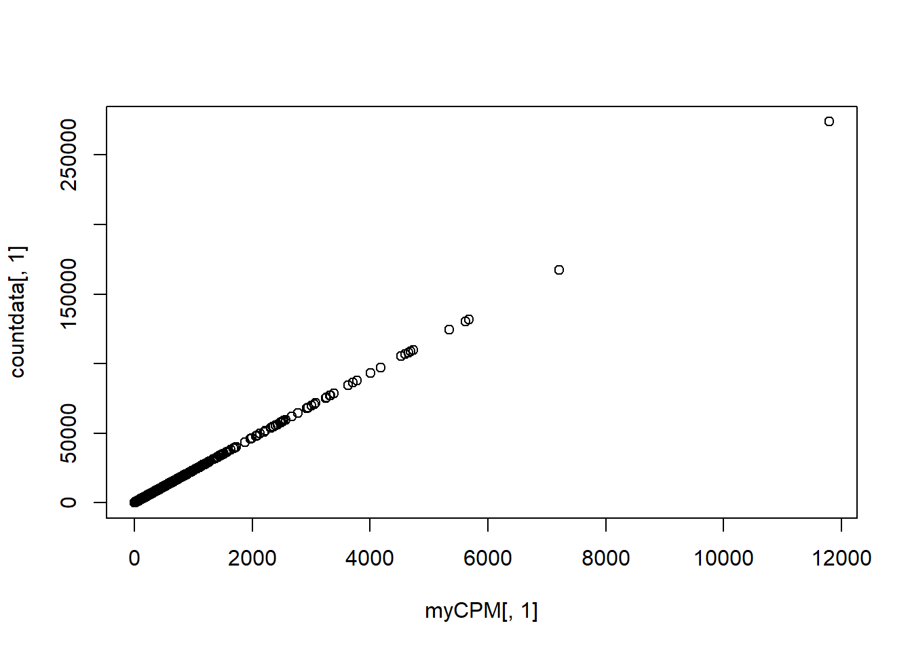
# Let us limit the x and y-axis so we can actually look to see what is happening at the smaller counts
plot(myCPM[,1],countdata[,1],ylim=c(0,50),xlim=c(0,3))
# Add a vertical line at 0.5 CPM
abline(v=0.5)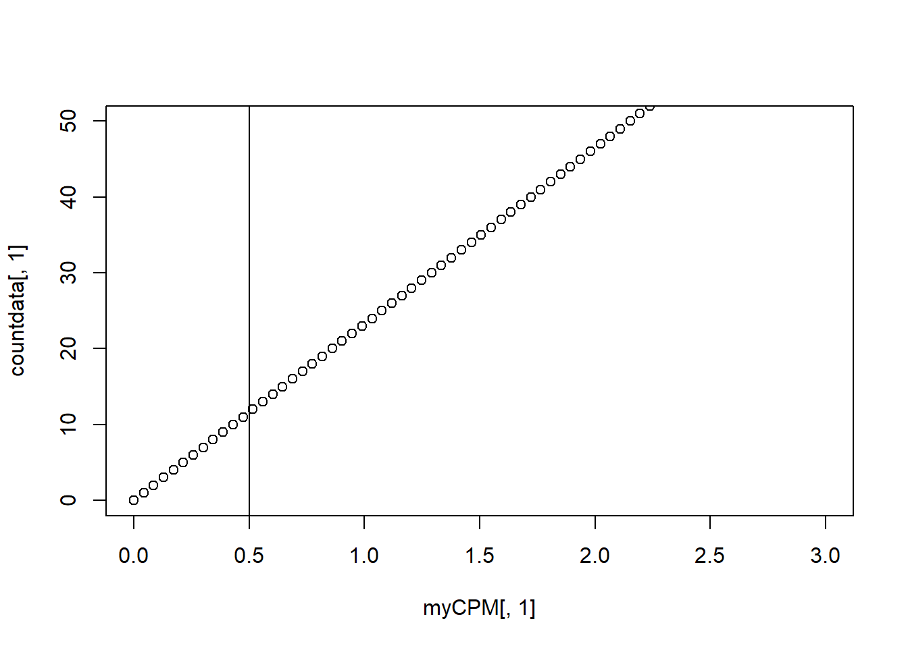
Challenge 1. Plot the counts-per-million versus counts for the second sample. 2. Add a vertical line at 0.5 and a horizontal line at 10. 3. Add the lines again, colouring them blue
# Let us limit the x and y-axis so we can actually look to see what is happening at the smaller counts
plot(myCPM[,2],countdata[,2],ylim=c(0,50),xlim=c(0,3))
# Add a vertical line at 0.5 CPM
abline(v=0.5, col="blue")
abline(h=10, col="blue")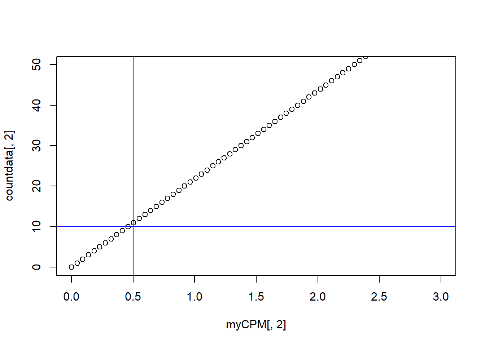
Now that we’ve checked our filtering method we will filter the DGEList object.
y <- y[keep, keep.lib.sizes=FALSE]Now that we have got rid of the lowly expressed genes and have our counts stored in a DGEList object, we can look at a few different plots to check that the data is good quality, and that the samples are as we would expect.
First, we can check how many reads we have for each sample in the y.
y$samples$lib.size [1] 23218026 21768136 24091588 22656713 21522033 20008326 20384562 21698793
[9] 22235847 21982745 24719697 24652963We can also plot the library sizes as a barplot to see whether there are any major discrepancies between the samples more easily.
# The names argument tells the barplot to use the sample names on the x-axis
# The las argument rotates the axis names
barplot(y$samples$lib.size,names=colnames(y),las=2)
# Add a title to the plot
title("Barplot of library sizes")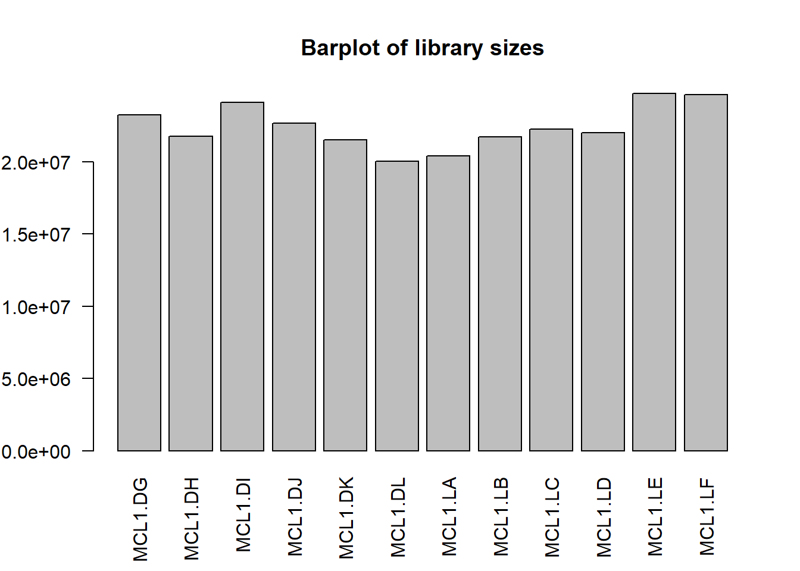
# we can also adjust the labelling if we want
barplot(y$samples$lib.size/1e06, names=colnames(y), las=2, ann=FALSE, cex.names=0.75)
mtext(side = 1, text = "Samples", line = 4)
mtext(side = 2, text = "Library size (millions)", line = 3)
title("Barplot of library sizes")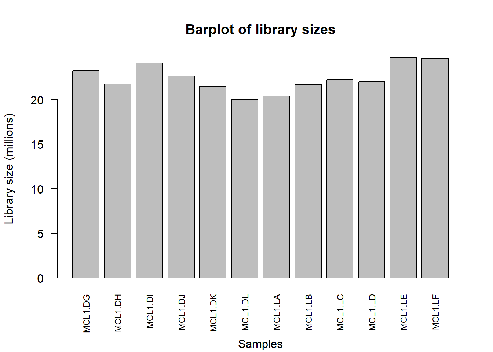
Count data is not normally distributed, so if we want to examine the distributions of the raw counts we need to log the counts. Next we’ll use box plots to check the distribution of the read counts on the log2 scale. We can use the cpm function to get log2 counts per million, which are corrected for the different library sizes. The cpm function also adds a small offset to avoid taking log of zero.
# Get log2 counts per million
logcounts <- cpm(y,log=TRUE)
# Check distributions of samples using boxplots
boxplot(logcounts, xlab="", ylab="Log2 counts per million",las=2)
# Let's add a blue horizontal line that corresponds to the median logCPM
abline(h=median(logcounts),col="blue")
title("Boxplots of logCPMs (unnormalised)")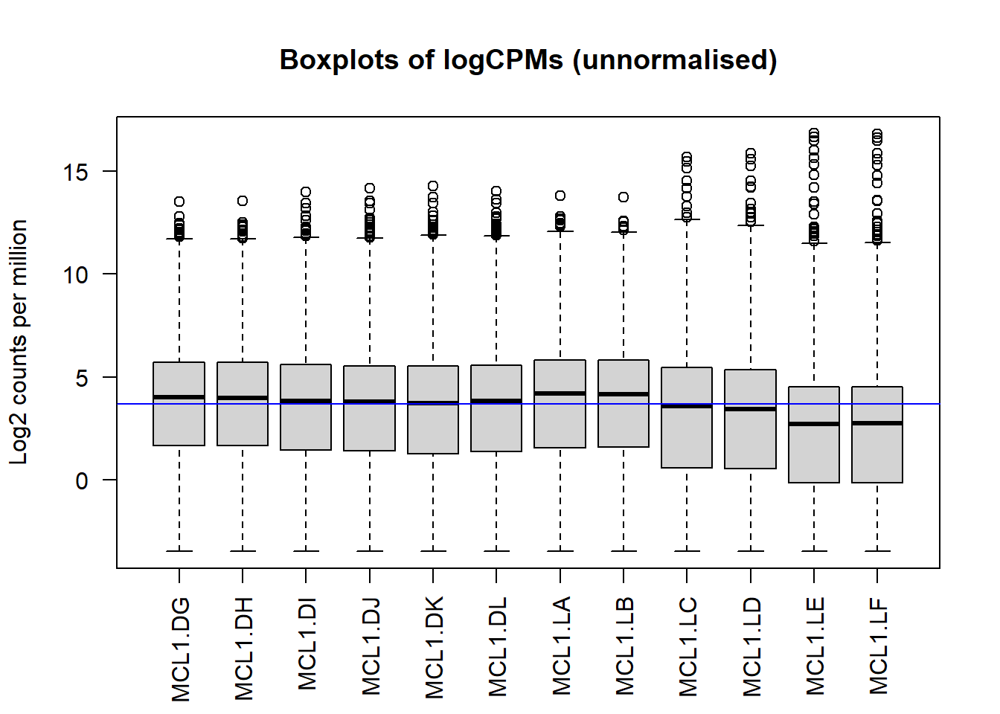
By far, one of the most important plots we make when we analyse RNA-Seq data are MDSplots. An MDSplot is a visualisation of a principle components analysis, which determines the greatest sources of variation in the data. A principle components analysis is an example of an unsupervised analysis, where we don’t need to specify the groups. If your experiment is well controlled and has worked well, what we hope to see is that the greatest sources of variation in the data are the treatments/groups we are interested in. It is also an incredibly useful tool for quality control and checking for outliers. We can use the plotMDS function to create the MDS plot.
plotMDS(y)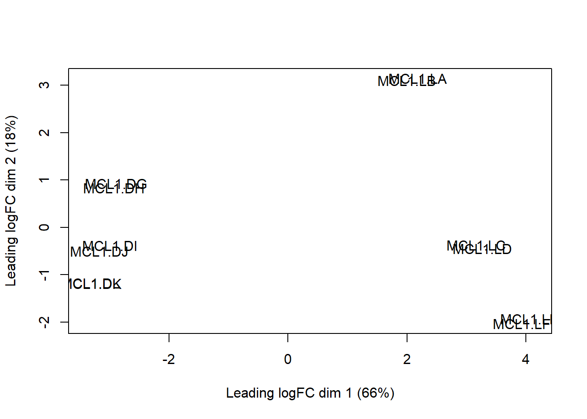
It is a bit difficult to see exactly what is going on with the default plot, although we do see samples grouping together in pairs. To make this plot more informative, we can colour the samples according to the grouping information. We can also change the labels, or instead of labels we can have points.
# We specify the option to let us plot two plots side-by-sde
par(mfrow=c(1,2))
# Let's set up colour schemes for CellType
# How many cell types and in what order are they stored?
levels(sampleinfo$CellType)[1] "basal" "luminal"## Let's choose purple for basal and orange for luminal
col.cell <- c("purple","orange")[sampleinfo$CellType]
data.frame(sampleinfo$CellType,col.cell) sampleinfo.CellType col.cell
1 luminal orange
2 basal purple
3 basal purple
4 basal purple
5 basal purple
6 basal purple
7 basal purple
8 luminal orange
9 luminal orange
10 luminal orange
11 luminal orange
12 luminal orange# Redo the MDS with cell type colouring
plotMDS(y,col=col.cell)
# Let's add a legend to the plot so we know which colours correspond to which cell type
legend("topleft",fill=c("purple","orange"),legend=levels(sampleinfo$CellType))
# Add a title
title("Cell type")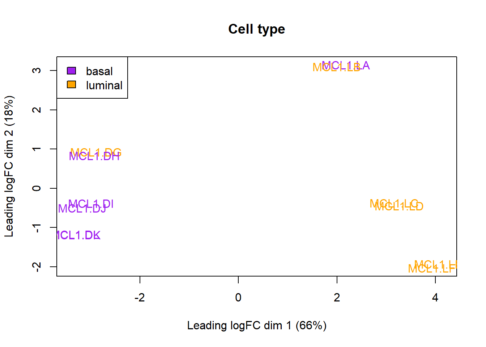
# Similarly for status
levels(sampleinfo$Status)[1] "lactate" "pregnant" "virgin" col.status <- c("blue","red","black")[sampleinfo$Status]
col.status [1] "black" "black" "red" "red" "blue" "blue" "black" "black" "red"
[10] "red" "blue" "blue" plotMDS(y,col=col.status)
legend("topleft",fill=c("blue","red","black"),legend=levels(sampleinfo$Status),cex=0.8)
title("Status")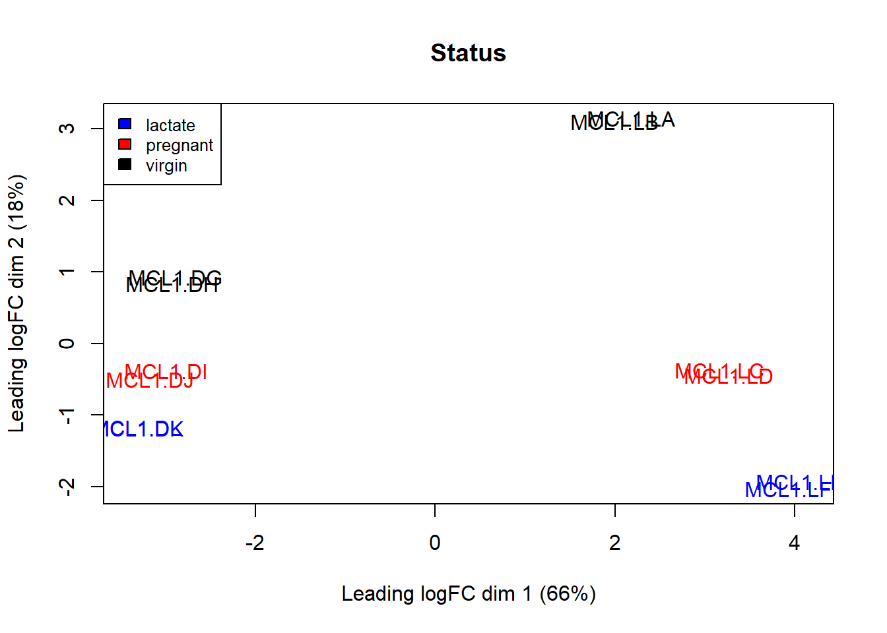
Look at the MDS plot coloured by cell type. Is there something strange going on with the samples? Identify the two samples that don’t appear to be in the right place.
# There is a sample info corrected file in your data directory
# Old sampleinfo
sampleinfo FileName SampleName CellType Status
1 MCL1.DG_BC2CTUACXX_ACTTGA_L002_R1 MCL1.DG luminal virgin
2 MCL1.DH_BC2CTUACXX_CAGATC_L002_R1 MCL1.DH basal virgin
3 MCL1.DI_BC2CTUACXX_ACAGTG_L002_R1 MCL1.DI basal pregnant
4 MCL1.DJ_BC2CTUACXX_CGATGT_L002_R1 MCL1.DJ basal pregnant
5 MCL1.DK_BC2CTUACXX_TTAGGC_L002_R1 MCL1.DK basal lactate
6 MCL1.DL_BC2CTUACXX_ATCACG_L002_R1 MCL1.DL basal lactate
7 MCL1.LA_BC2CTUACXX_GATCAG_L001_R1 MCL1.LA basal virgin
8 MCL1.LB_BC2CTUACXX_TGACCA_L001_R1 MCL1.LB luminal virgin
9 MCL1.LC_BC2CTUACXX_GCCAAT_L001_R1 MCL1.LC luminal pregnant
10 MCL1.LD_BC2CTUACXX_GGCTAC_L001_R1 MCL1.LD luminal pregnant
11 MCL1.LE_BC2CTUACXX_TAGCTT_L001_R1 MCL1.LE luminal lactate
12 MCL1.LF_BC2CTUACXX_CTTGTA_L001_R1 MCL1.LF luminal lactate# I'm going to write over the sampleinfo object with the corrected sample info
sampleinfo <- read.delim("data/SampleInfo_Corrected.txt", stringsAsFactors = TRUE)
sampleinfo FileName SampleName CellType Status
1 MCL1.DG_BC2CTUACXX_ACTTGA_L002_R1 MCL1.DG basal virgin
2 MCL1.DH_BC2CTUACXX_CAGATC_L002_R1 MCL1.DH basal virgin
3 MCL1.DI_BC2CTUACXX_ACAGTG_L002_R1 MCL1.DI basal pregnant
4 MCL1.DJ_BC2CTUACXX_CGATGT_L002_R1 MCL1.DJ basal pregnant
5 MCL1.DK_BC2CTUACXX_TTAGGC_L002_R1 MCL1.DK basal lactate
6 MCL1.DL_BC2CTUACXX_ATCACG_L002_R1 MCL1.DL basal lactate
7 MCL1.LA_BC2CTUACXX_GATCAG_L001_R1 MCL1.LA luminal virgin
8 MCL1.LB_BC2CTUACXX_TGACCA_L001_R1 MCL1.LB luminal virgin
9 MCL1.LC_BC2CTUACXX_GCCAAT_L001_R1 MCL1.LC luminal pregnant
10 MCL1.LD_BC2CTUACXX_GGCTAC_L001_R1 MCL1.LD luminal pregnant
11 MCL1.LE_BC2CTUACXX_TAGCTT_L001_R1 MCL1.LE luminal lactate
12 MCL1.LF_BC2CTUACXX_CTTGTA_L001_R1 MCL1.LF luminal lactate# We need to correct the info for the groups
group <- factor(paste(sampleinfo$CellType,sampleinfo$Status,sep="."))
y$samples$group <- group# Redo the MDSplot with corrected information
par(mfrow=c(1,2))
col.cell <- c("purple","orange")[sampleinfo$CellType]
col.status <- c("blue","red","black")[sampleinfo$Status]
plotMDS(y,col=col.cell)
legend("topleft",fill=c("purple","orange"),legend=levels(sampleinfo$CellType))
title("Cell type")
plotMDS(y,col=col.status)
legend("topleft",fill=c("blue","red","black"),legend=levels(sampleinfo$Status),cex=0.8)
title("Status")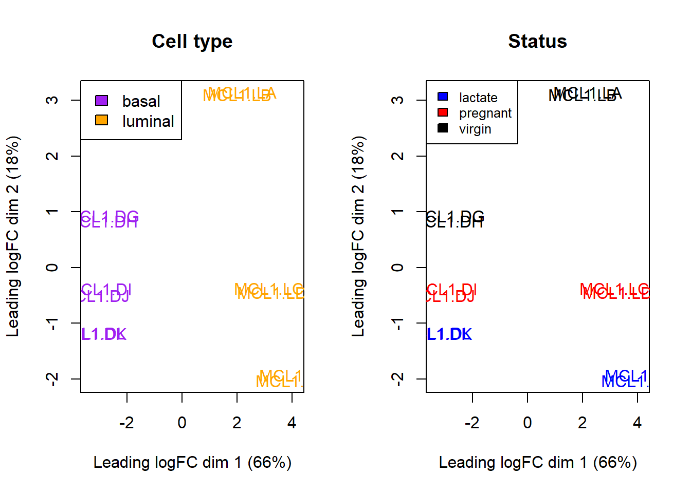
What is the greatest source of variation in the data (i.e. what does dimension 1 represent)? What is the second greatest source of variation in the data?
# Redo the MDSplot with corrected information
# par(mfrow=c(1,2))
col.cell <- c("tomato","violet")[sampleinfo$CellType]
col.status <- c("royalblue","red","grey10")[sampleinfo$Status]
pch.cell <- c(1,4)[sampleinfo$CellType]
# plotMDS(y,col=col.cell, pch=pch.cell)
# legend("topleft",fill=c("tomato","violet"),legend=levels(sampleinfo$CellType))
# title("Cell type")
plotMDS(y,col=col.status, pch=pch.cell)
legend("topleft",fill=c("royalblue","red","grey10"),legend=levels(sampleinfo$Status),cex=0.8)
legend("bottom",pch=c(1,4),legend=levels(sampleinfo$CellType),cex=0.8)
title("Status")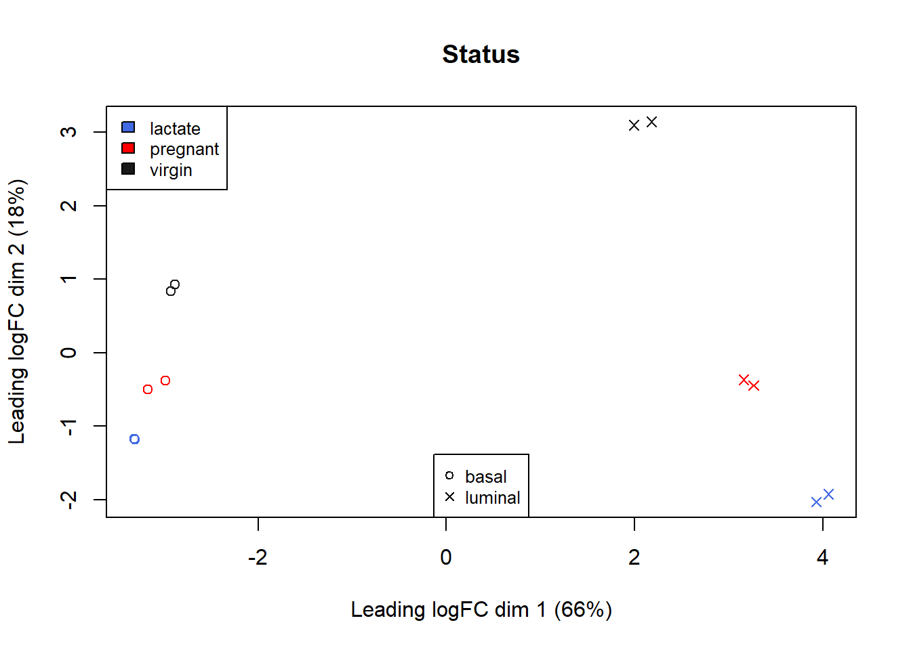
The distance between each pair of samples in the MDS plot is calculated as the leading fold change, defined as the root-mean-square of the largest 500 log2-fold changes between that pair of samples. Replicate samples from the same group cluster together in the plot, while samples from different groups form separate clusters. This indicates that the differences between groups are larger than those within groups, i.e., differential expression is greater than the variance and can be detected. In the MDS plot, the distance between basal samples on the left and luminal cells on the right is about 6 units, corresponding to a leading fold change of about 64-fold (2^6 = 64) between basal and luminal. The expression differences between virgin, pregnant and lactating are greater for luminal cells than for basal.
Notes
plotMDS plots the first two dimensions as a default, however you can plot higher dimensions using the dim argument.
# Dimension 3 appears to separate pregnant samples from the rest. Dim4?
plotMDS(y,dim=c(3,4),col=col.status,pch=pch.cell,cex=2)
legend("topright",legend=levels(sampleinfo$Status),col=col.status,pch=16)
legend("bottomright",legend=levels(sampleinfo$CellType),pch=c(1,4))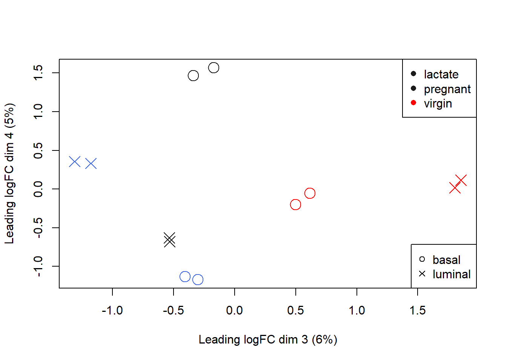
Another alternative is to generate an interactive MDS plot using the Glimma package. This allows the user to interactively explore the different dimensions.
labels <- paste(sampleinfo$SampleName, sampleinfo$CellType, sampleinfo$Status)
glMDSPlot(y, labels=labels, groups=group, folder="mds")An alternative to plotMDS for examining relationships between samples is using hierarchical clustering. Heatmaps are a nice visualisation to examine hierarchical clustering of your samples. We can do this using the heatmap.2 function from the gplots package. In this example heatmap.2 calculates a matrix of euclidean distances from the logCPM (logcounts object) for the 500 most variable genes. (Note this has more complicated code than plotting principle components using plotMDS.)
The RColorBrewer package has nicer colour schemes, accessed using the brewer.pal function. “RdYlBu” is a common choice, and “Spectral” is also nice.
Note:The png function will create a png file to save the plots created straight after, and will close this file when dev.off() is called. To see your plots interactively, simply omit those two lines.
Let’s select data for the 500 most variable genes and plot the heatmap
# We estimate the variance for each row in the logcounts matrix
var_genes <- apply(logcounts, 1, var)
head(var_genes) 497097 20671 27395 18777 21399 58175
13.6624115 2.7493077 0.1581944 0.1306781 0.3929526 4.8232522 # Get the gene names for the top 500 most variable genes
select_var <- names(sort(var_genes, decreasing=TRUE))[1:500]
head(select_var)[1] "22373" "12797" "11475" "11468" "14663" "24117"# Subset logcounts matrix
highly_variable_lcpm <- logcounts[select_var,]
dim(highly_variable_lcpm)[1] 500 12head(highly_variable_lcpm) MCL1.DG MCL1.DH MCL1.DI MCL1.DJ MCL1.DK MCL1.DL MCL1.LA
22373 0.4660671 0.9113837 7.435080 7.807900 9.288318 9.318483 6.6277452
12797 10.0429713 9.6977966 11.046567 11.358857 11.605894 11.491773 0.8529774
11475 12.3849005 12.3247093 13.989573 14.180048 14.285489 14.032486 3.4823396
11468 7.1537287 6.8917703 9.325436 9.661942 9.491765 9.424803 -1.8086076
14663 1.9717614 1.9471846 9.091895 8.756261 9.539747 9.504098 6.1710357
24117 7.8378853 7.8995788 8.634622 8.582447 6.704706 6.777335 -1.3824015
MCL1.LB MCL1.LC MCL1.LD MCL1.LE MCL1.LF
22373 6.6884102 12.1273320 13.1502579 15.6481000 15.569686
12797 1.6034598 2.3323371 2.4601069 0.8055694 1.288003
11475 4.3708241 5.2116574 5.0788442 3.6997655 3.965775
11468 -0.6387584 0.5244769 0.6694047 -0.4412496 -1.014878
14663 6.2328260 13.7571928 14.2506761 16.0020840 15.885390
24117 -0.5387838 -0.2280797 0.1243601 -2.9468278 -2.945610## Get some nicer colours
mypalette <- brewer.pal(11,"RdYlBu")
morecols <- colorRampPalette(mypalette)
# Set up colour vector for celltype variable
col.cell <- c("purple","orange")[sampleinfo$CellType]
# Plot the heatmap
heatmap.2(highly_variable_lcpm,col=rev(morecols(50)),trace="none", main="Top 500 most variable genes across samples",ColSideColors=col.cell,scale="row")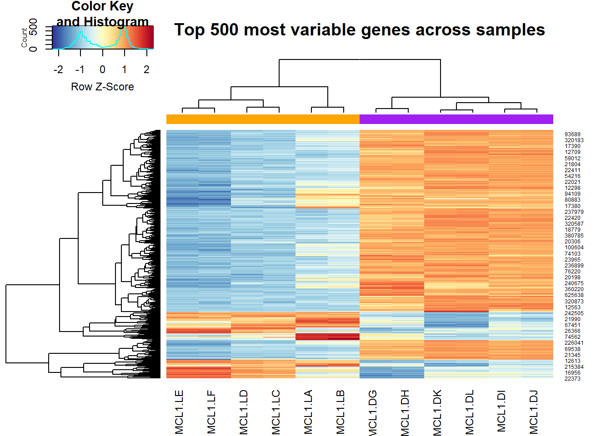
# Save the heatmap
png(file="./output/High_var_genes.heatmap.png")
heatmap.2(highly_variable_lcpm,col=rev(morecols(50)),trace="none", main="Top 500 most variable genes across samples",ColSideColors=col.cell,scale="row")
dev.off()png
2 Challenge - Change the colour scheme to “PiYG” and redo the heatmap. Try ?RColorBrewer and see what other colour schemes are available. - Change the sample names to group using the labCol argument - Redo the heatmap using the top 500 LEAST variable genes.
TMM normalization is performed to eliminate composition biases between libraries (Mark D. Robinson and Oshlack 2010). This generates a set of normalization factors, where the product of these factors and the library sizes defines the effective library size. The calcNormFactors function calculates the normalization factors between libraries. TMM normalisation (and most scaling normalisation methods) scale relative to one sample.
# Apply normalisation to DGEList object
y <- calcNormFactors(y)This will update the normalisation factors in the DGEList object (their default values are 1). Take a look at the normalisation factors for these samples.
y$samples group lib.size norm.factors
MCL1.DG basal.virgin 23218026 1.2368993
MCL1.DH basal.virgin 21768136 1.2139485
MCL1.DI basal.pregnant 24091588 1.1255640
MCL1.DJ basal.pregnant 22656713 1.0698261
MCL1.DK basal.lactate 21522033 1.0359212
MCL1.DL basal.lactate 20008326 1.0872153
MCL1.LA luminal.virgin 20384562 1.3684449
MCL1.LB luminal.virgin 21698793 1.3653200
MCL1.LC luminal.pregnant 22235847 1.0047431
MCL1.LD luminal.pregnant 21982745 0.9232822
MCL1.LE luminal.lactate 24719697 0.5291015
MCL1.LF luminal.lactate 24652963 0.5354877The normalization factors multiply to unity across all libraries. A normalization factor below one indicates that the library size will be scaled down, as there is more suppression (i.e., composition bias) in that library relative to the other libraries. This is also equivalent to scaling the counts upwards in that sample. Conversely, a factor above one scales up the library size and is equivalent to downscaling the counts.
The last two samples have much smaller normalisation factors, and MCL1.LA and MCL1.LB have the largest. If we plot mean difference plots using the plotMD function for these samples, we should be able to see the composition bias problem. We will use the logcounts, which have been normalised for library size, but not for composition bias.
par(mfrow=c(1,2))
plotMD(logcounts,column = 7)
abline(h=0,col="grey")
plotMD(logcounts,column = 11)
abline(h=0,col="grey")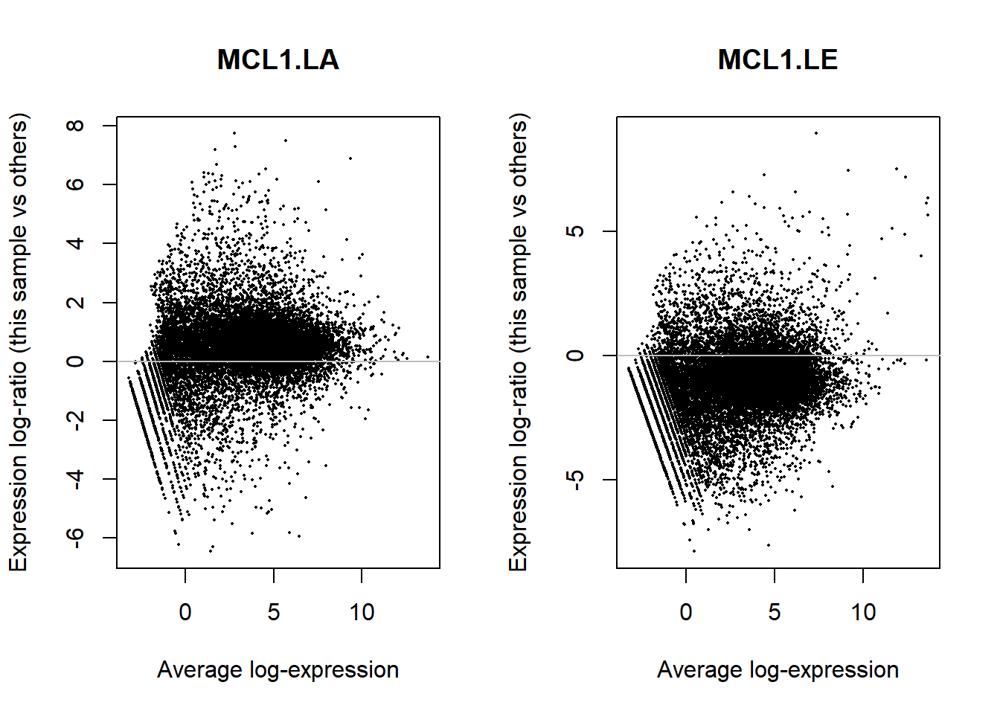
The mean-difference plots show average expression (mean: x-axis) against log-fold-changes (difference: y-axis). Because our DGEList object contains the normalisation factors, if we redo these plots using y, we should see the composition bias problem has been solved.
par(mfrow=c(1,2))
plotMD(y,column = 7)
abline(h=0,col="grey")
plotMD(y,column = 11)
abline(h=0,col="grey")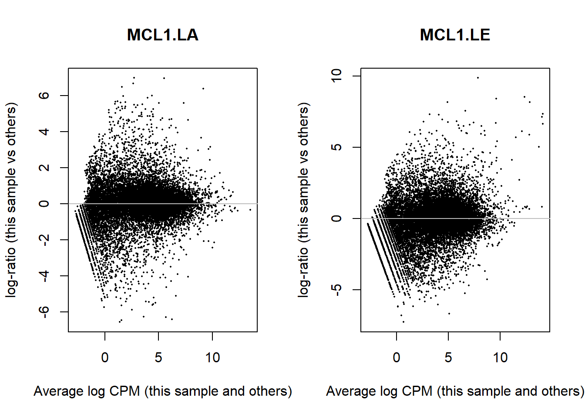
Challenge Plot the biased and unbiased MD plots side by side for the same sample to see the before and after TMM normalisation effect.
save(group,y,logcounts,sampleinfo,file="./data/day1objects.Rdata")Now that we are happy that we have normalised the data and that the quality looks good, we can continue to testing for differentially expressed genes. There are a number of packages to analyse RNA-Seq data. The limma package (Ritchie et al. 2015) (since version 3.16.0) offers the voom function, which transforms the read counts into logCPMs while taking into account the mean-variance relationship in the data (Charity W. Law et al. 2014). After vooming, users can apply a linear model to the voom transformed data to test for differentially expressed genes, using standard limma commands.
Load the objects into the workspace that we created yesterday
load("./data/day1objects.Rdata")
# objects()First we need to create a design matrix for the groups (see the excellent limma user guide for more information on design matrices). There are many different ways to set up your design matrix, and it is dictated by what comparisons you would like to test. We will follow the set-up from pg 43 of the limma vignette (“Interaction models: 2X2 factorial designs”).
In this analysis let’s assume that we will be testing differences in status in the different cell types separately. For example, we want to know which genes are differentially expressed between pregnant and lactating in basal cells only. We have previously coded the group variable, which is a concatenation of cell type and status. Coding the cell type and status in this way allows us to be flexible in specifying which comparisons we are interested in.
# Look at group variable again
group [1] basal.virgin basal.virgin basal.pregnant basal.pregnant
[5] basal.lactate basal.lactate luminal.virgin luminal.virgin
[9] luminal.pregnant luminal.pregnant luminal.lactate luminal.lactate
6 Levels: basal.lactate basal.pregnant basal.virgin ... luminal.virgin# Specify a design matrix without an intercept term
design <- model.matrix(~ 0 + group)
design groupbasal.lactate groupbasal.pregnant groupbasal.virgin
1 0 0 1
2 0 0 1
3 0 1 0
4 0 1 0
5 1 0 0
6 1 0 0
7 0 0 0
8 0 0 0
9 0 0 0
10 0 0 0
11 0 0 0
12 0 0 0
groupluminal.lactate groupluminal.pregnant groupluminal.virgin
1 0 0 0
2 0 0 0
3 0 0 0
4 0 0 0
5 0 0 0
6 0 0 0
7 0 0 1
8 0 0 1
9 0 1 0
10 0 1 0
11 1 0 0
12 1 0 0
attr(,"assign")
[1] 1 1 1 1 1 1
attr(,"contrasts")
attr(,"contrasts")$group
[1] "contr.treatment"## Make the column names of the design matrix a bit nicer
colnames(design) <- levels(group)
design basal.lactate basal.pregnant basal.virgin luminal.lactate luminal.pregnant
1 0 0 1 0 0
2 0 0 1 0 0
3 0 1 0 0 0
4 0 1 0 0 0
5 1 0 0 0 0
6 1 0 0 0 0
7 0 0 0 0 0
8 0 0 0 0 0
9 0 0 0 0 1
10 0 0 0 0 1
11 0 0 0 1 0
12 0 0 0 1 0
luminal.virgin
1 0
2 0
3 0
4 0
5 0
6 0
7 1
8 1
9 0
10 0
11 0
12 0
attr(,"assign")
[1] 1 1 1 1 1 1
attr(,"contrasts")
attr(,"contrasts")$group
[1] "contr.treatment"Each column of the design matrix tells us which samples correspond to each group. The samples which come from basal cells from a lactating mouse correspond to columns 5 and 6 in the counts matrix, i.e. the samples which have 1s
Once we have our design matrix ready to go, we can perform our voom transformation. Voom will automatically adjust the library sizes using the norm.factors already calculated. The voom transformation uses the experiment design matrix, and produces an EList object. We can add plot=TRUE to generate a plot of the mean-variance trend. This plot can also tell us if there are any genes that look really variable in our data, and if we’ve filtered the low counts adequately.
par(mfrow=c(1,1))
v <- voom(y,design,plot = TRUE)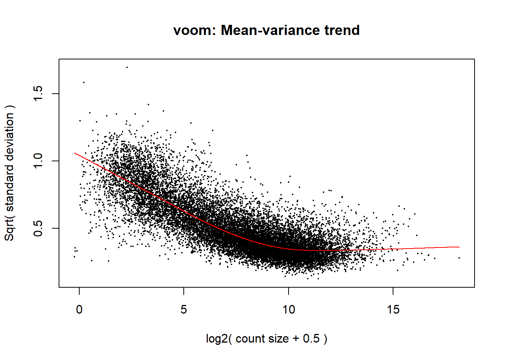
The voom normalised log2 counts can be found in v$E. Take a look at what is in the voom object.
vAn object of class "EList"
$genes
ENTREZID SYMBOL GENENAME
1 497097 Xkr4 X-linked Kx blood group related 4
5 20671 Sox17 SRY (sex determining region Y)-box 17
6 27395 Mrpl15 mitochondrial ribosomal protein L15
7 18777 Lypla1 lysophospholipase 1
9 21399 Tcea1 transcription elongation factor A (SII) 1
15799 more rows ...
$targets
group lib.size norm.factors
MCL1.DG basal.virgin 28718360 1.236899
MCL1.DH basal.virgin 26425396 1.213949
MCL1.DI basal.pregnant 27116624 1.125564
MCL1.DJ basal.pregnant 24238743 1.069826
MCL1.DK basal.lactate 22295130 1.035921
7 more rows ...
$E
MCL1.DG MCL1.DH MCL1.DI MCL1.DJ MCL1.DK MCL1.DL MCL1.LA
497097 3.932532 3.507368 1.272317 3.292541 3.9909851 3.724252 -5.8019424
20671 1.890808 2.787899 1.605217 2.121856 0.9642868 1.923156 -0.7575483
27395 3.429894 3.149591 3.637638 3.631978 3.7037376 3.636318 4.3286281
18777 4.505933 4.285975 5.128398 5.270351 5.3801014 5.185279 4.8889286
21399 5.804007 5.822559 5.988345 5.764344 5.7006304 5.615502 5.5801412
MCL1.LB MCL1.LC MCL1.LD MCL1.LE MCL1.LF
497097 -5.8887821 -5.4816421 -5.343143 -4.709206 -4.7226146
20671 -0.2163568 -0.2721888 -1.255680 -1.901851 -0.3302972
27395 3.9707527 4.4535229 4.016606 4.555237 4.6973455
18777 4.8635986 4.9031416 4.993363 5.379583 5.4610208
21399 5.4087074 5.5797290 5.512504 5.280898 5.2446116
15799 more rows ...
$weights
[,1] [,2] [,3] [,4] [,5] [,6] [,7]
[1,] 42.85032 40.59638 19.78119 18.11020 38.62541 37.98661 0.7907909
[2,] 21.34610 19.99539 15.74020 14.40027 10.70068 10.49511 4.5401043
[3,] 35.05544 33.04583 39.72941 36.82081 35.31518 34.70612 50.4586968
[4,] 56.26175 53.86441 69.16366 66.65108 66.03797 65.46069 64.6692219
[5,] 76.92857 75.98600 76.79528 75.45282 71.62644 71.16558 73.5980084
[,8] [,9] [,10] [,11] [,12]
[1,] 0.7907909 0.7907909 0.7907909 0.7907909 0.7907909
[2,] 4.7399033 3.4277768 3.2224692 2.1314506 2.1428929
[3,] 52.1833006 45.7806579 43.1302387 38.6112610 38.8559918
[4,] 66.0984998 60.0161723 57.3174922 54.0693981 54.3410792
[5,] 74.5613544 70.1642210 68.1238307 50.8570652 51.1210163
15799 more rows ...
$design
basal.lactate basal.pregnant basal.virgin luminal.lactate luminal.pregnant
1 0 0 1 0 0
2 0 0 1 0 0
3 0 1 0 0 0
4 0 1 0 0 0
5 1 0 0 0 0
luminal.virgin
1 0
2 0
3 0
4 0
5 0
7 more rows ...# What is contained in this object?
names(v)[1] "genes" "targets" "E" "weights" "design" Challenge 1. What is in the targets slot of v and what does it correspond to in y? 2. What are the dimensions of the weights slot in v?
We can repeat the box plots for the normalised data to compare to before normalisation. The expression values in v$E are already log2 values so we don’t need to log-transform.
par(mfrow=c(1,2))
boxplot(logcounts, xlab="", ylab="Log2 counts per million",las=2,main="Unnormalised logCPM")
## Let's add a blue horizontal line that corresponds to the median logCPM
abline(h=median(logcounts),col="blue")
boxplot(v$E, xlab="", ylab="Log2 counts per million",las=2,main="Voom transformed logCPM")
## Let's add a blue horizontal line that corresponds to the median logCPM
abline(h=median(v$E),col="blue")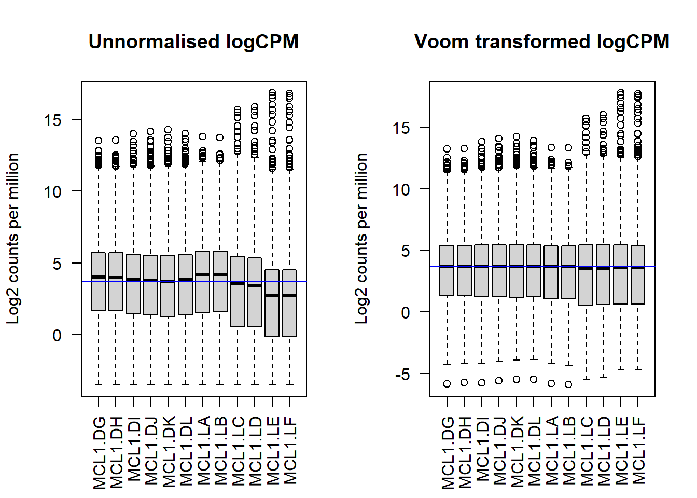
Compare these box plots to the box plots we generated before performing the normalisation. Can you see any differences?
Now that we have the voom transformed data we can use limma to test for differential expression. First we fit a linear model for each gene using the lmFit function in limma. lmFit needs the voom object and the design matrix that we have already specified, which is stored within the voom object.
# Fit the linear model
fit <- lmFit(v)
names(fit) [1] "coefficients" "stdev.unscaled" "sigma" "df.residual"
[5] "cov.coefficients" "pivot" "rank" "genes"
[9] "Amean" "method" "design" lmFit estimates group means according to the design matrix, as well as gene-wise variances. There are a number of items stored in the fit object, most of which are specific to the statistical testing, and we won’t be discussing these in detail today.
Since we are interested in differences between groups, we need to specify which comparisons we want to test. The comparison of interest can be specified using the makeContrasts function. Here, we are interested in knowing which genes are differentially expressed between the pregnant and lactating group in the basal cells. This is done by defining the null hypothesis as basal.pregnant - basal.lactate = 0 for each gene. Note that the group names must exactly match the column names of the design matrix.
cont.matrix <- makeContrasts(B.PregVsLac=basal.pregnant - basal.lactate,levels=design)Take a look at the contrast matrix. The contrast matrix tells limma which columns of the design matrix we are interested in testing our comparison. Note that here we have specified only one comparison to test, but we can specify as many as we want in one go.
cont.matrix Contrasts
Levels B.PregVsLac
basal.lactate -1
basal.pregnant 1
basal.virgin 0
luminal.lactate 0
luminal.pregnant 0
luminal.virgin 0Now we can apply the contrasts matrix to the fit object to get the statistics and estimated parameters of our comparison that we are interested in. Here we call the contrasts.fit function in limma.
fit.cont <- contrasts.fit(fit, cont.matrix)The final step is to call the eBayes function, which performs empirical Bayes shrinkage on the variances, and estimates moderated t-statistics and the associated p-values.
fit.cont <- eBayes(fit.cont)Check the dimensions of the fit object
dim(fit.cont)[1] 15804 1We can use the limma decideTests function to generate a quick summary of DE genes for the contrasts.
summa.fit <- decideTests(fit.cont)
summary(summa.fit) B.PregVsLac
Down 2635
NotSig 10464
Up 2705Challenge 1. Add another contrast to the contrasts matrix: L.PregVsLac = luminal.pregnant - luminal.lactate and re-run the code above. You should have two comparisons in fit.cont now. 2. Check out the vennDiagram function (HINT: type ?vennDiagram). Can you show the overlap of differentially expressed genes between the two comparisons? How many genes are commonly differentially expressed?
Let’s do a few plots to make sure everything looks good and that we haven’t made a mistake in the analysis. Genome-wide plots that are useful for checking are MAplots (or MDplots) and volcano plots. There are functions in limma for plotting these with fit.cont as input.
# We want to highlight the significant genes. We can get this from decideTests.
par(mfrow=c(1,2))
plotMD(fit.cont,coef=1,status=summa.fit[,"B.PregVsLac"], values = c(-1, 1), hl.col=c("blue","red"))
# For the volcano plot we have to specify how many of the top genes to highlight.
# We can also specify that we want to plot the gene symbol for the highlighted genes.
# let's highlight the top 100 most DE genes
volcanoplot(fit.cont,coef=1,highlight=100,names=fit.cont$genes$SYMBOL, main="B.PregVsLac")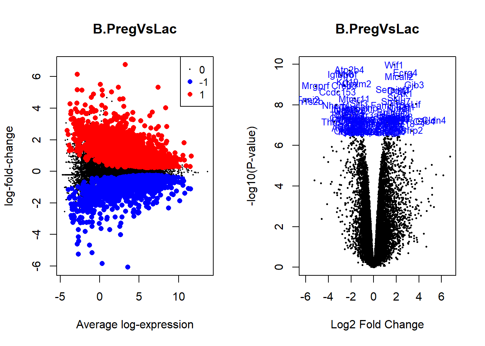
Look at the MD plot and volcano plot for the second comparison, L.PregVsLac. Change the number of highlighted genes to 200 in the volcano plot.
Before following up on the DE genes with further lab work, it is recommended to have a look at the expression levels of the individual samples for the genes of interest. We can quickly look at grouped expression using stripchart. We can use the normalised log expression values in the voom object (v$E).
par(mfrow=c(1,3))
# Let's look at the first gene in the topTable, Wif1, which has a rowname 24117
stripchart(v$E["24117",]~group)
# This plot is ugly, let's make it better
stripchart(v$E["24117",]~group,vertical=TRUE,las=2,cex.axis=0.8,pch=16,col=1:6,method="jitter")
# Let's use nicer colours
nice.col <- brewer.pal(6,name="Dark2")
stripchart(v$E["24117",]~group,vertical=TRUE,las=2,cex.axis=0.8,pch=16,cex=1.3,col=nice.col,method="jitter",ylab="Normalised log2 expression",main="Wif1")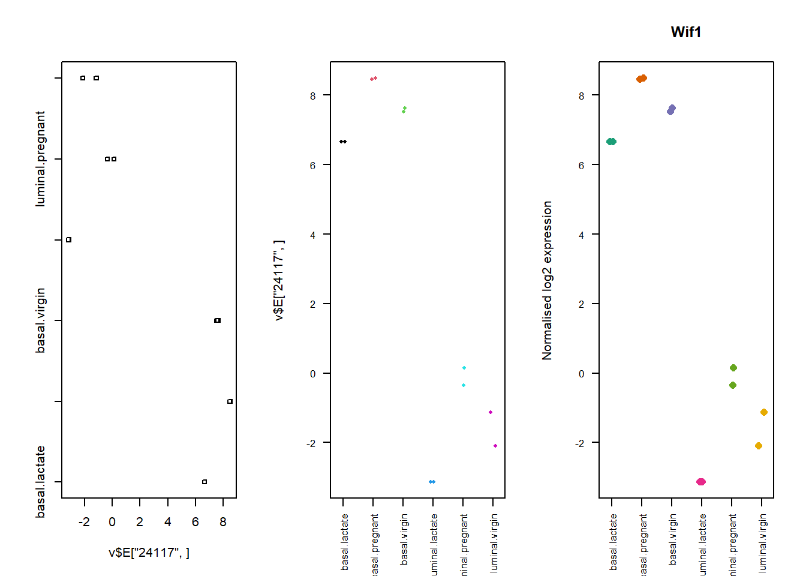
Notice anything interesting about the expression of this gene?
Challenge Take the top gene from the L.PregVsLactate comparison and make a stripchart of grouped expression as above. (Don’t forget to change the title of the plot.)
An interactive version of the volcano plot above that includes the raw per sample values in a separate panel is possible via the glXYPlot function in the Glimma package.
group2 <- group
levels(group2) <- c("basal.lactate","basal.preg","basal.virgin","lum.lactate", "lum.preg", "lum.virgin")
glXYPlot(x=fit.cont$coefficients[,1], y=fit.cont$lods[,1],
xlab="logFC", ylab="B", main="B.PregVsLac",
counts=v$E, groups=group2, status=summa.fit[,1],
anno=fit.cont$genes, side.main="ENTREZID", folder="volcano")This function creates an html page (./volcano/XY-Plot.html) with a volcano plot on the left and a plot showing the log-CPM per sample for a selected gene on the right. A search bar is available to search for genes of interest.
sessionInfo()R version 4.3.0 (2023-04-21 ucrt)
Platform: x86_64-w64-mingw32/x64 (64-bit)
Running under: Windows 11 x64 (build 22000)
Matrix products: default
locale:
[1] LC_COLLATE=English_Australia.utf8 LC_CTYPE=English_Australia.utf8
[3] LC_MONETARY=English_Australia.utf8 LC_NUMERIC=C
[5] LC_TIME=English_Australia.utf8
time zone: Australia/Sydney
tzcode source: internal
attached base packages:
[1] stats4 stats graphics grDevices utils datasets methods
[8] base
other attached packages:
[1] NMF_0.26 cluster_2.1.4 rngtools_1.5.2
[4] registry_0.5-1 RColorBrewer_1.1-3 gplots_3.1.3
[7] org.Mm.eg.db_3.17.0 AnnotationDbi_1.62.1 IRanges_2.34.0
[10] S4Vectors_0.38.1 Biobase_2.60.0 BiocGenerics_0.46.0
[13] Glimma_2.10.0 edgeR_3.42.4 limma_3.56.2
[16] workflowr_1.7.0
loaded via a namespace (and not attached):
[1] DBI_1.1.3 bitops_1.0-7
[3] rlang_1.1.1 magrittr_2.0.3
[5] gridBase_0.4-7 git2r_0.32.0
[7] matrixStats_1.0.0 compiler_4.3.0
[9] RSQLite_2.3.1 getPass_0.2-2
[11] reshape2_1.4.4 png_0.1-8
[13] callr_3.7.3 vctrs_0.6.3
[15] stringr_1.5.0 pkgconfig_2.0.3
[17] crayon_1.5.2 fastmap_1.1.1
[19] XVector_0.40.0 caTools_1.18.2
[21] utf8_1.2.3 promises_1.2.0.1
[23] rmarkdown_2.22 ps_1.7.5
[25] bit_4.0.5 xfun_0.39
[27] zlibbioc_1.46.0 cachem_1.0.8
[29] GenomeInfoDb_1.36.0 jsonlite_1.8.5
[31] blob_1.2.4 highr_0.10
[33] later_1.3.1 DelayedArray_0.26.3
[35] BiocParallel_1.34.2 parallel_4.3.0
[37] R6_2.5.1 bslib_0.5.0
[39] stringi_1.7.12 GenomicRanges_1.52.0
[41] jquerylib_0.1.4 iterators_1.0.14
[43] Rcpp_1.0.10 SummarizedExperiment_1.30.2
[45] knitr_1.43 httpuv_1.6.11
[47] Matrix_1.5-4.1 tidyselect_1.2.0
[49] rstudioapi_0.14 yaml_2.3.7
[51] doParallel_1.0.17 codetools_0.2-19
[53] processx_3.8.1 plyr_1.8.8
[55] lattice_0.21-8 tibble_3.2.1
[57] KEGGREST_1.40.0 evaluate_0.21
[59] Biostrings_2.68.1 pillar_1.9.0
[61] BiocManager_1.30.21 MatrixGenerics_1.12.2
[63] whisker_0.4.1 KernSmooth_2.23-21
[65] foreach_1.5.2 generics_0.1.3
[67] rprojroot_2.0.3 RCurl_1.98-1.12
[69] ggplot2_3.4.2 munsell_0.5.0
[71] scales_1.2.1 gtools_3.9.4
[73] glue_1.6.2 tools_4.3.0
[75] locfit_1.5-9.8 fs_1.6.2
[77] grid_4.3.0 colorspace_2.1-0
[79] GenomeInfoDbData_1.2.10 cli_3.6.1
[81] fansi_1.0.4 S4Arrays_1.0.4
[83] dplyr_1.1.2 gtable_0.3.3
[85] DESeq2_1.40.1 sass_0.4.6
[87] digest_0.6.31 htmlwidgets_1.6.2
[89] memoise_2.0.1 htmltools_0.5.5
[91] lifecycle_1.0.3 httr_1.4.6
[93] bit64_4.0.5